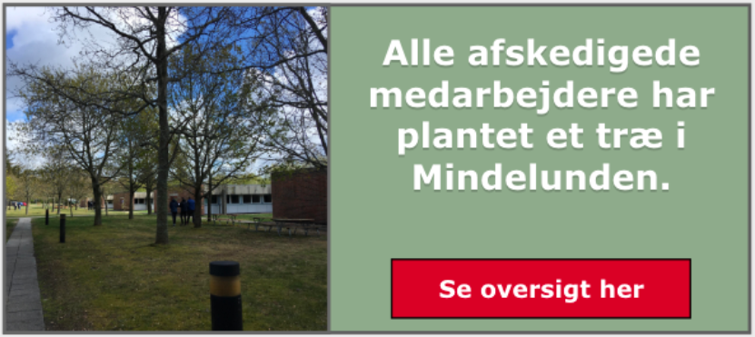

Style guide for DAR
Logo
Logoet bliver brugt på alle sider. Det skal være synligt oppe i venstre hjørne.
HTML:
img class="dar"
src="Billeder/dar-logo.png"
alt="Det Danske Artilleriregiment logo"
CSS:
{
width: 45px;
height: auto;
float: left;
margin: 8px 8px 8px 25px;
min-width: 45px;
}
Typografi
Verdana bruges til både trykte og digitale medier, samt i underliggende myndigheders navnetræk.
Typografien bruges i følgende skriftsnit: Bold, Regular og Italic.
Verdana er en typografi uden fødder og er udviklet, så den har en god læsbarhed i små størrelser. Den egner sig derfor godt til både print og skærm. Verdana benyttes af mange, og som skrifttype er den derfor ikke identitetsbærende, men nærmest neutral i sit udtryk.
Generelt:
{
font-family: verdana, sans-serif;
}
h1-tags
{
font-size: 2vw;
}
h2-tags
{
font-size: 1.6vw;
}
p-tags
{
font-size: 1vw;
}
Alle andre definationer af fonten er relativt i forhold til, hvad der skal laves.
Farvepaletter
Dette er hovedfarverne som er brugt til selve layoutet af det digitale platform.
Interaktivt Map
Kortet bruges på forsiden til computer version. Der skal kunne klikkes på et træ og så kommer der et lille info-skilt frem med den information, som passer til den tilhørende afskedige.

HTML:
img class="map" src="Billeder/map.png"
alt="Kort over Mindelunden"
CSS:
{
height: 90vh;
width: 100%;
min-height: 44vw;
}
Billedstil
Der bliver brugt billeder på forskellige måder. Den ene måde fylder en del af en boks, hvor den anden fylder hele boksen, men har en mindre opacity.

{
width: 51%;
float: left;
border-right: solid;
border-color: #000000;
}
{
width: 100%;
height: 35.5vw;
opacity: 0.3;
}
Knapper
Vi bruger forskellige typer af knapper til forskellige elementer. Søgeknappen skal altid være øverst til højre ved siden af søge baren, på de sider, hvor man kan søge.
border: solid;
border-left-width: inherit;
cursor: pointer;
width: 4%;
height: 6.9vh;
min-width: 53px;
min-height: 52px;
float: right;
margin-top: 11.5px;
margin-right: 1%;
}
Vi bruger knapper i navigationsbaren på 2 forskellige måder. Når den er aktiv og når den ikke er aktiv
Generelt
{
height: 10vh;
float: left;
width: 15%;
border-right: solid;
min-height: 75px;
color: #000000;
}
Hover
{
background-color: #555555;
color: #FFFFFF;
border-color: #000000;
}
Når den er aktiv, skal den se sådan ud
{
background-color: #555555;
border-color: #000000;
height: 10vh;
float: left;
width: 15%;
border-right: solid;
min-height: 75px;
border-right-color: #000000;
}
Tekst
{
padding: 11px;
text-align: center;
color: #FFFFFF;
}
Vi har en knap, hvor når man trykker på den, skal den rulle videre til indholdet, som er nedenunder

.rul-ned
{
text-align: center;
}
.rul-ned img
{
display: inline-block;
width: 90px;
margin-top: -25px;
cursor: pointer;
}
Vi bruger en call to action knap, som skal føre hen til henholdsvis en oversigt over de afskedige og en tilmelding til åbent hus.
{
width: 35%;
position: relative;
left: 7.25%;
background-color: #C8102E;
color: #FFFFFF;
font-family: verdana, sans-serif;
font-size: 1vw;
border: solid;
border-color: #000000;
cursor: pointer;
}
Vi har en anden call to action knap, som skal føre videre til mere information om den specifikke afskedige.
{
float: right;
margin-right: 1%;
margin-top: 1%;
margin-bottom: 1%;
color: #fff;
background-color: #c8102e;
font-family: Verdana, sans-serif;
border: solid;
border-color: #000;
border-width: thin;
cursor: pointer;
}